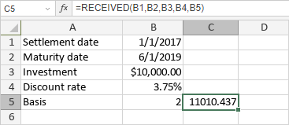

RECEIVED funkcija
RECEIVED funkcija je jedna od finansijskih funkcija. Koristi se za izračunavanje iznosa koji se prima na dospeće za potpuno uloženi hartiju od vrednosti.
Sintaksa
RECEIVED(settlement, maturity, investment, discount, [basis])
RECEIVED funkcija ima sledeće argumente:
| Argument | Opis |
|---|---|
| settlement | Datum kada je hartija od vrednosti kupljena. |
| maturity | Datum kada hartija od vrednosti ističe. |
| investment | Iznos plaćen za hartiju od vrednosti. |
| discount | Stopa diskonta hartije od vrednosti. |
| basis | Osnova za brojanje dana, numerička vrednost između 0 i 4. Opcioni argument. Moguće vrednosti su prikazane u tabeli ispod. |
basis argument može biti jedna od sledećih vrednosti:
| Numerička vrednost | Osnova brojanja |
|---|---|
| 0 | US (NASD) 30/360 |
| 1 | Stvarno/stvarno |
| 2 | Stvarno/360 |
| 3 | Stvarno/365 |
| 4 | Evropsko 30/360 |
Napomene
Datumi moraju biti uneti pomoću DATE funkcije.
Kako primeniti RECEIVED funkciju.
Primeri
Slika ispod prikazuje rezultat koji vraća RECEIVED funkcija.
